◆「迦爾帝亞男孩收藏2016 Pick Up召喚」期間◆
期間：2016年3月9日（三）15:00～3月16日（三）12:59
以期間限定舉辦「迦爾帝亞男孩收藏2016 Pick Up召喚」！
初登場的Servant「★5（SSR）天草四郎」以期間限定登場！
另外，「★4（SR）阿斯托爾福」「★3(R)子吉爾」也是初登場！
“男孩收藏”顧名思義這次只會召喚男性Servant。另外還有每日交替Pick Up的★5(SSR)男性Servant！ 詳情請在召喚左下的召喚詳細確認。
※天草四郎在「迦爾帝亞男孩收藏2016Pick Up召喚」期間結束後，不會追加到故事召喚。
並且，有關”男孩收藏”的概念禮裝「★5(SSR)キス・ユア・ハンド」、「★5(SSR)センセイとボク」、「★5(SSR)ヴァーサス」、「★4(SR)月下の四匹」、「★4(SR)グラスフル・スイートタイム」、「★4(SR)ノイジー・オブセッション」、「★3(R)サロン・ド・マリー」、「★3(R)プリンス・オブ・スレイヤー」也以期間限定登場！
在Pick Up期間中，期間限定Servant、新登場Servant、期間限定概念禮裝的出現機率UP！
10次召喚★4(SR)以上1枚確定和★3(R)以上的Servant1位確定！
※★4(SR)以上確定包含Servant和概念禮裝。
※所謂「Servant出現機率UP」意指比同稀有度的Servant出現機率更高的設定。
| Pick Up日 | 每日交替Pick Up的Servant |
|---|---|
| 3月9日（三）16：00～22：59 | 天草四郎 |
| 3月9日（三）23：00～3月10日（四）22：59 | 天草四郎 |
| 3月10日（四）23：00～3月11日（五）22：59 | 天草四郎、弗拉德三世 |
| 3月11日（五）23：00～3月12日（六）22：59 | 天草四郎、諸葛孔明〔埃爾梅羅II世〕 |
| 3月12日（六）23：00～3月13日（日）22：59 | 天草四郎、尼古拉・特斯拉 |
| 3月13日（日）23：00～3月14日（一）22：59 | 天草四郎 |
| 3月14日（一）23：00～3月15日（二）22：59 | 天草四郎 |
| 3月15日（二）23：00～3月16日（三）12：59 | 天草四郎 |
※請注意每天交替Pick Up的Servant會變更。
※Pick Up期間中，尼古拉・特斯拉就算第四特異點通過前也能入手。
※關於阿斯托爾福、子吉爾，在此Pick Up期間中，為常駐Pick Up的對象。
※關於其他的Servant・概念禮裝，請在聖晶石召喚畫面左下的「召喚詳細」確認。
Pick Up期間中，在迦爾帝亞之門出現天草四郎體驗關卡！
※「特異點F 炎上污染都市 冬木」通過後開放。
迎接「★5（SSR）天草四郎」做為支援成員，挑戰期間限定的關卡！
別錯過體驗各Servant的技能和寶具的機會！
◆天草四郎體驗關卡舉辦期間◆
期間：2016年3月9日（三）15:00～3月16日（三）12:59
◆關卡通過報酬◆
ライダーピース
アーチャーピース
呼符
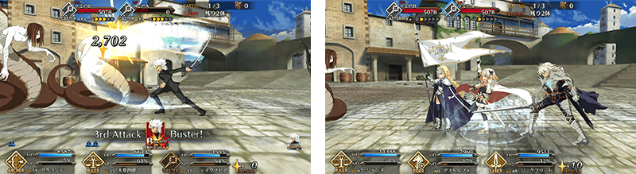
※開發中畫面。

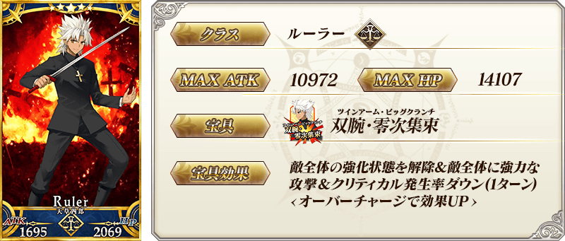
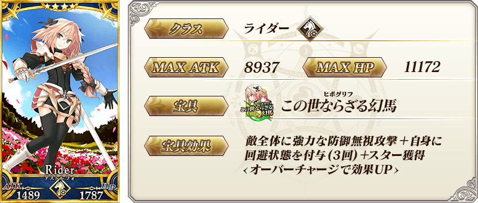

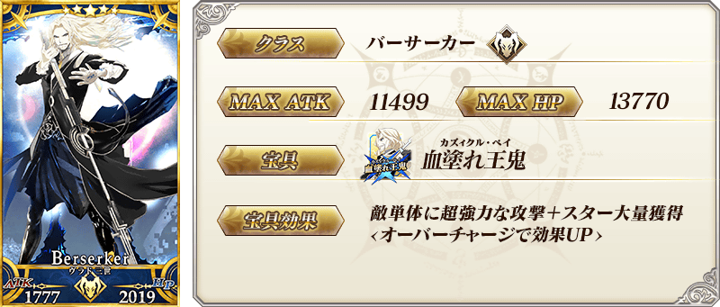

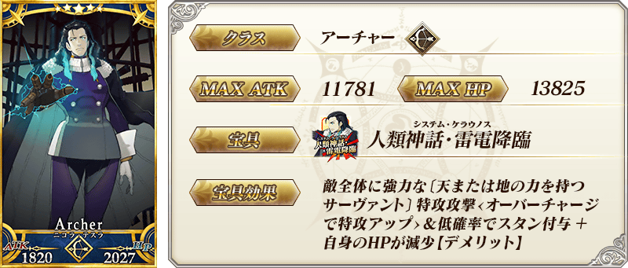

| 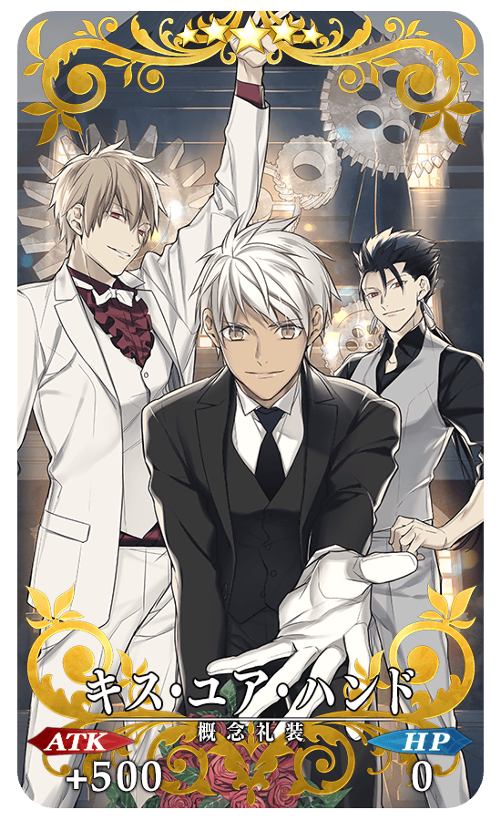 |
★★★★★SSR |
| 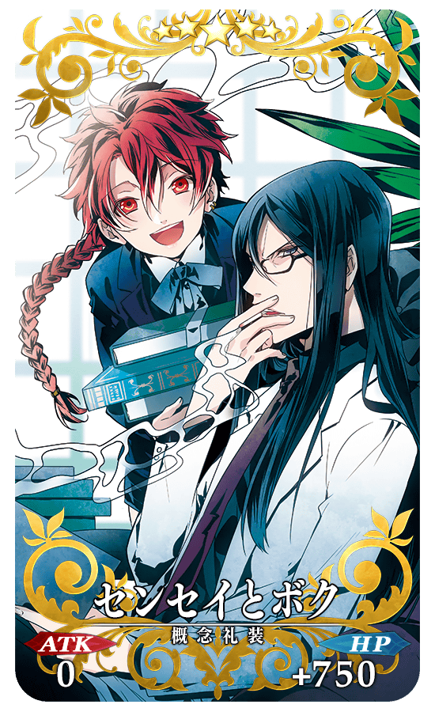 |
★★★★★SSR |
| 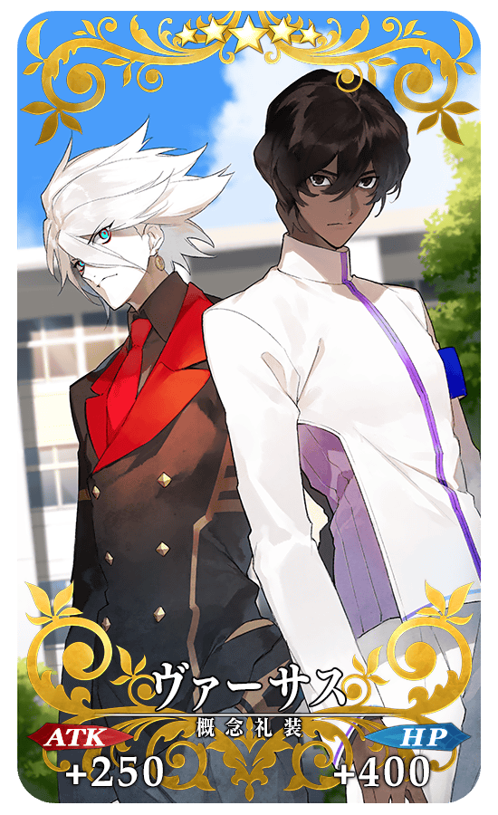 |
★★★★★SSR |
| 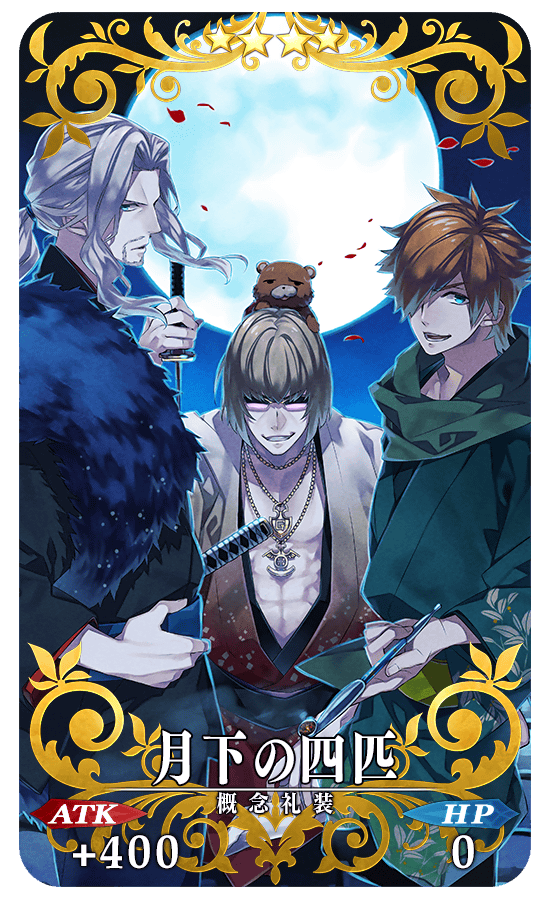 |
★★★★SR |
| 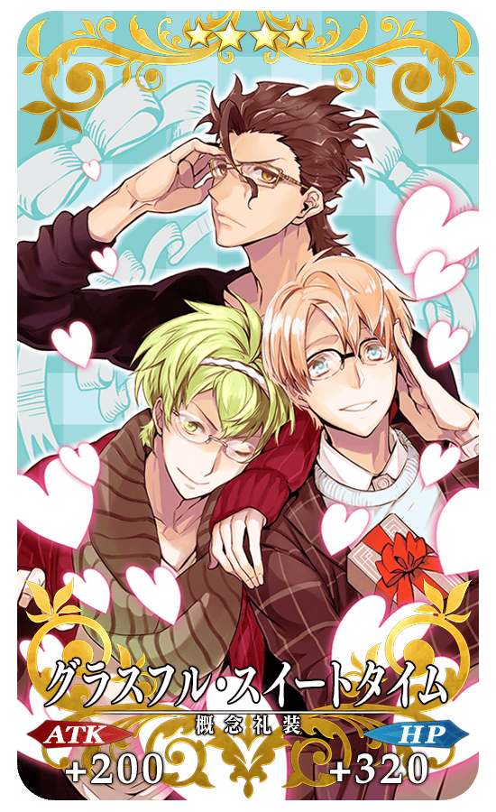 |
★★★★SR |
| 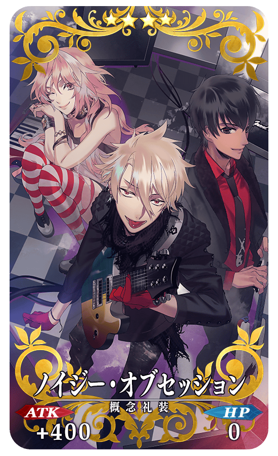 |
★★★★SR |
| 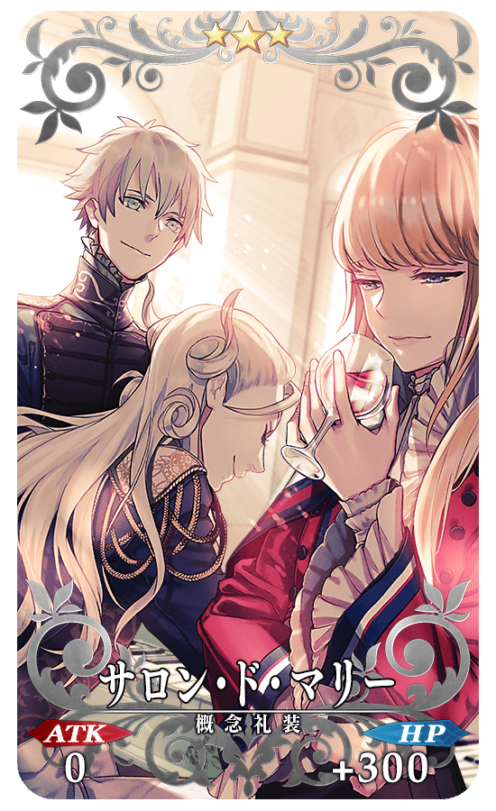 |
★★★R |
 |
★★★R |
這次紀念「迦爾帝亞男孩收藏2016」，特別舉辦能從期間限定概念禮裝中選出喜歡的1張的宣傳活動。詳情請從下列橫幅確認。


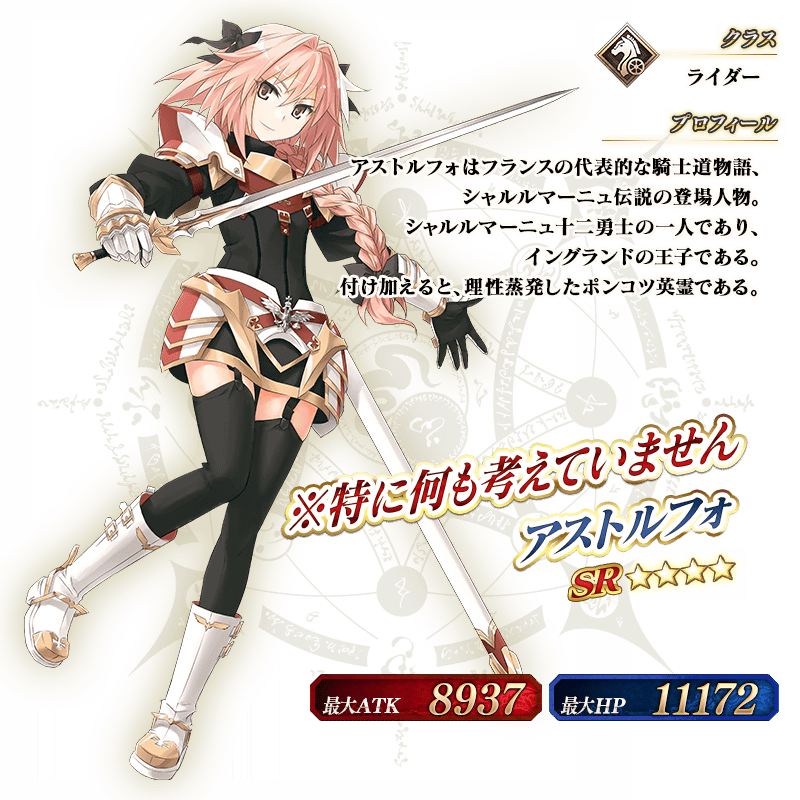